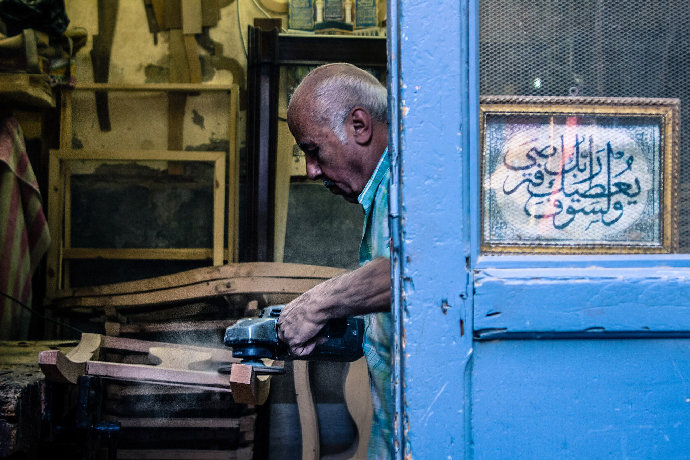

Version adaptée dys · Lesson 8
Lesson 8. Welcome to the workshop

Aménagements de la Lesson 8
- Courriel A2 seulement, présenté avec des interlignes larges. Questions 1 à 6, réponses courtes, possibilité de souligner dans le texte.
- Écoute : donner avant le message les cinq informations à écouter (qui parle, commande 4702, problème 4821, chaussures, sac). Troisième écoute possible.
- Préparation : fiche à six cases déjà titrées, avec amorces écrites (Good morning, I'm... Welcome... You must... You can leave your bag... First... Then... Finally... Last week, a box arrived... We...).
- Oral : durée A2, partenaire bienveillant, banque de mots visible, droit de relire une amorce. L'enseignant évite la question imprévue trop éloignée, ou la pose avec un choix visuel (Did you tell your tutor, or did you call the customer first?).
- Autoévaluation : cases à cocher seulement, plus une phrase à trous : Today I did well when I... Next time I want to...
- Compte rendu écrit : accepter le cadre de la leçon 7, éventuellement dicté, sans exiger une remise en page complexe.

Activité 1. Read the visitor's email (10 min). Compréhension de l'écrit, évaluée.
Pour les élèves, texte A2
From: Alex Morgan
To: the workshop team
Subject: Visit on Friday morning
Dear team,
I am coming to your workshop on Friday morning, at ten. I am a customer from Greenfield Parts. I would like to see my order (number 4702) and to understand how you pack the boxes. I also need one safety rule, because this is my first visit.
Please meet me at the entrance. I will have a bag with me.
Thank you very much.
Kind regards, Alex Morgan
Pour les élèves, complément B1 (un second paragraphe, à la place ou en plus de la dernière ligne A2)
From: Alex Morgan
To: the workshop team
Subject: Visit on Friday morning
Dear team,
I am coming to your workshop on Friday morning, at ten. I am a customer from Greenfield Parts. I would like to see my order (number 4702) and to understand how you pack the boxes. I also need one safety rule, because this is my first visit.
Please meet me at the entrance. I will have a bag with me.
Thank you very much.
Kind regards, Alex Morgan
I would also like a short explanation of a problem you had recently, and of the solution you found. If the order is not ready, please tell me what happened and what you can do. I may ask a few questions about your PFMP and your tasks. I look forward to meeting you.
Kind regards, Alex Morgan
Pour les élèves, questions (évaluées)
- Who is writing, and from which company?
- When is the visit?
- What is the order number?
- What two things would Alex like to see or understand?
- Why does Alex need a safety rule?
- Where should you meet Alex? What will Alex have?
- (B1) What else would Alex like you to explain?
- (B1) What should you do if the order is not ready?
Corrigé
- Alex Morgan, from Greenfield Parts. (Alex is a customer.)
- On Friday morning, at ten.
- 4702.
- The order, and how you pack the boxes.
- Because this is Alex's first visit.
- At the entrance. Alex will have a bag.
- A short explanation of a recent problem and the solution. Alex may also ask about the PFMP and the tasks.
- Tell Alex what happened and what you can do.
Activité 2. Listen to the tutor's message (8 min). Compréhension de l'oral, évaluée.
Script enseignant
Hello, this is Mr Baker, your tutor. I have a short message about Friday's visit. Alex Morgan, from Greenfield Parts, is coming at ten. Please be at the entrance on time. The order 4702 is ready: we packed it yesterday afternoon. There was a problem last week with another box, number 4821: it arrived damaged, and we replaced the parts the same day. You can tell Alex about that, and you can explain our safety rules. Remember: visitors must wear safety shoes, and they can't leave bags on the workbenches. They can leave them in the locker. Good luck. See you on Friday.
Pour les élèves, questions (évaluées)
Listen twice. You may take notes.
- Who is speaking?
- Is order 4702 ready? When did they pack it?
- What was the problem last week? What was the order number?
- What did they do about that problem?
- Give two safety points from the message, about shoes and bags.
Corrigé
- Mr Baker, the tutor.
- Yes. They packed it yesterday afternoon.
- A box arrived damaged, order 4821.
- They replaced the parts the same day.
- Visitors must wear safety shoes. They can't leave bags on the workbenches. They can leave them in the locker.
Activité 3. Prepare (8 min).
Pour les élèves
Prepare your welcome, in pairs. One of you is the student at work, the other is Alex Morgan, the visitor. You will then change roles, if time allows, or on the teacher's decision.
Use:
- the email,
- the tutor's message,
- your notes,
- the painting as the place: you are in this workshop, with workbenches, cardboard boxes and large windows.
Your plan (you must cover all six points)
- Greet Alex, introduce yourself, welcome Alex to the workshop.
- Say what people are doing in the workshop now.
- Explain how you pack the boxes, or another task from your trade (First, Then, Finally).
- Give at least one safety rule (must / can't). Say where Alex can leave the bag.
- Report the problem with order 4821 and the solution (past simple).
- Answer Alex's questions. If you don't understand, say Could you say that again, please?
A2: speak for about four minutes, together. You may use a word bank. B1: speak for five to six minutes. Be ready for an unexpected question.
Activité 4. The oral final task (22 min). Expression orale en continu et interaction orale, évaluées.
Pour les élèves
It is Friday morning, at ten. You are in the workshop. Alex Morgan is at the entrance. When it is your turn, perform the welcome. Be polite, clear and professional. Look at the visitor, not only at your notes. If you forget a word, explain it in another way. Good luck.
Corrigé
Exemple de passage réussi, niveau A2 (extrait) :
Student: Good morning. I'm Samir, a PFMP student. Welcome to the workshop. Alex: Good morning. I'm Alex Morgan, from Greenfield Parts. Student: Nice to meet you. Please, you must wear safety shoes here. You can leave your bag in the locker, over there. You can't leave it on the workbench. Alex: Thank you. I'd like to see order 4702. Student: Yes, it is ready. We packed it yesterday afternoon. At the moment, people are working at the workbenches. They are preparing cardboard boxes. First, we read the order. Then, we pack the products. Finally, we write the number on the box. Alex: What happened last week? Student: Last week, box 4821 arrived damaged. We replaced the parts the same day. I'm sorry about that problem. We can check your order now. Alex: Thank you.
Exemple de relance B1, si l'élève a déjà couvert le plan :
Alex: What would you do if a box arrived damaged today? Student: I would tell my tutor immediately. I wouldn't call you before I told the tutor. Then we would replace the parts and we would apologise.
Activité 5. Brief feedback and self-assessment (7 min).
Pour les élèves
Self-assessment. Tick what you could do today.
- I greeted the visitor and I introduced myself.
- I used the present continuous to say what was happening.
- I explained a task with clear steps.
- I gave a safety rule with must, have to, should or can't.
- I reported a problem in the past simple, and I proposed a solution.
- I answered questions and I was polite.
- I used notes, not a full written text.
Write one thing you did well, and one thing you want to improve. Hand in your PFMP report if you have not already done so.
Travail à la maison, après la tâche finale.
Pour les élèves
Homework, Lesson 8
- Look at your self-assessment. Rewrite, in 6 to 8 lines, the moment of the oral that you want to improve. Write a better version, in dialogue form.
- (Optional, B1) Write a short thank-you email to Alex Morgan (60 to 80 words): thank the visitor, confirm the order is ready, and remind one safety point for a next visit.
Corrigé
- (Production personnelle. Attendu : un dialogue clair, poli, grammaticalement plus juste que le passage faible, qui reprend un des six points du plan.)
- Exemple : Dear Alex Morgan, Thank you for your visit on Friday morning. It was a pleasure to welcome you to the workshop. I am happy to confirm that order 4702 was ready, as we packed it on Thursday afternoon. For your next visit, please remember that you must wear safety shoes in the workshop, and that you can leave your bag in the locker. Kind regards, Samir Benali PFMP student